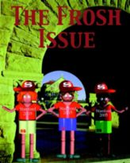

|
Stanford Review - Archive - Volume XXVII - Welcome Issue 2001
|

|
Click to view
enlarged image
|
A History of the Stanford Review
1987. Stanford University, under President Donald Kennedy, was at its most liberal. It was in that era that it abandoned the Western Civilization humanities program and replaced it with a politicized, anti-Western program. It was in that era when the University created a speech code to threaten anyone who spoke out in politically incorrect ways. And, in response, it was in that era that the Stanford Review was founded.
....Full story in News.....by Henry Towsner
A Word From The Editor
Welcome to Stanford! Although it may seem like nothing from the outside world ever penetrates beyond our palm-lined driveways, Stanford is in fact affected by and in turn affects the world around us in ways that you might not suspect. The funny thing is, the more of the one that we have, the more that the other comes along with it. It's a trite statement, but it's also a true statement, that interconnection defines the modern world. Stanford's location in the heart of Silicon Valley means that we have unprecedented opportunities to make a difference, but, I promise you, it also means that we have unprecedented opportunities to be made different.
....Full story in A Word From The Editor.....by Scott Rasmussen
Bush Finds Core Advisors at Hoover
Dateline: October 29, 1999
This article was written in the middle of Autumn Quarter, soon after Gov. Bush declared that he would run for President. In the year since, his connection to the Hoover fellows has only grown closer. Condoleeza Rice, formerly Stanford's Provost, is now President Bush's National Security Advisor. In this article, the Review brought a story to campus--which later was picked up nationally--that most students were little aware of.
Starting from nothing, George W. Bush assembled largest policy machine ever seen for a presidential candidate, staffed in large part by Stanford's own Hoover Institution.
Over a hundred advisors from everywhere in America are struggling to give shape and form to Gov. Bush's proposals, still a full year before the election. No one has seen anything of this scope before at this stage of a candidacy. And Mr. Bush will need all the advice he can get in order to shape his proposals before this year's front-loaded primaries.
....Full story in News.....by Bob McGrew and Henry Towsner
Fall IHUM Review: Area One Under the Microscope
"IHUM sucks." Perhaps it's not the most common refrain heard in freshmen dorms, but at this time of the quarter it's at least a close second behind similar comments about Branner. It makes sense: people develop distaste for large institutions that they can't do anything about, and when they can't take it anymore, they turn the institutions upside down. This explains the French Revolution, the inevitable historical cycle of Stanford's humanities requirement, and might even provide insight to the coming downfall of Branner.
....Full story in News.....by Scott Rasmussen
Politics Under Red-Tile Roofs
It doesn't take long to discover the major political bias at Stanford. As at most universities and Californian institutions, the ideology is predominantly left of center. The rallies in white plaza, the petitions that sweep through the dorms, the proposals for boycotts, and the ubiquitous propaganda all assert liberal values. After a short time at Stanford, students realize that nobody is immune to campus political life. How the ASSU special fees are allocated, the results of each dorm's grape boycott, and the political leanings of the IHUM faculty affect engineers and political science majors, members of the Stanford Democrats and members of the rugby team, columnists for the Daily and poets for the literary magazine. As freshmen, you should embrace Stanford's political climate and understand how it affects you.
....Full story in Opinion
Davis's Electricity Policy Deplorable
Persistent rolling blackouts threaten to seriously damage California's economy. Governor Gray Davis presents this as lesser of two evils, with the alternative of letting the retail price of electricity rise until the resulting conservation brings demand into line with supply. Davis rejects this market approach on the grounds that would force Californians to pay gouger's prices. He grudgingly accepted a mere 40% rate increase after wholesale prices went up 700% from last year, and at times have spiked as high as 5000%.
....Full story in Opinion
Read This. Save $209
We've decided to save the children.
....Full story in Opinion
Smoke Signals
The Chief congratulates the administration on the brilliant execution of its plan to close off the Foothills after Palo Alto refused to allow any development at all last spring. Let's hear what other people are saying about it
....Read all about it in Smoke Signals
The Last Page
Last fall the grape workers' union finally decided to end the grapes boycott, much to the chagrin of Stanford activists. The Review leaves with you a photographic history of the grapes boycott. Savor these images: you may never see them on this campus again.
....Full Story in The Last Page
Page last modified on Thursday, 02-Mar-2006 00:15:36 MST.
|

{kind=link}